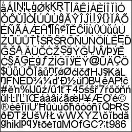

This document discusses how to get EAText to work with an arbitrary graphics engine. You should expect it to take about one or two days' work to make an EAText adapter for your graphics system, assuming you are familiar with your graphics system. You should be familiar with the information in the User Guide document before reading this document.
Text must be drawn by some graphics system, but there are different graphics systems across varying applications and platforms. EAText attempts to implement as much text/font/glyph/layout as posible, but there still needs to be some glue provided by the user to make this work with a given graphics system. There are two fundamental things the user needs to provide in the way of this glue:
The GlyphCache class implements a dynamic texture atlas, which consists of one or more textures which store glyphs derived from outline (e.g. TrueType) fonts. Recall that TrueType fonts are defined by scalable outlines but we need to draw them on the screen as bitmaps. The conversion of a TrueType character from its outline form on disk to a bitmap form in memory is a fairly CPU-intensive task. So what we do is implement a cache of these bitmaps which stores them in one or more textures. Here is an example of a glyph cache texture completely filled with glyphs.

The GlyphCache class implements the management of this dynamic texture atla for you. However, since it uses a graphics system texture to store the bitmapped glyphs, it cannot do so without some help from the user. Below is the public interface for the current version of the GlyphCache class. Note that the four functions in blue are pure-virtual and the user must provide an implementation of this in a subclass of GlyphCache. The user can additionally override other functions in the GlyphCache class or entirely re-implement the GlyphCache class.
class GlyphCache { public: GlyphCache(Allocator::ICoreAllocator* pCoreAllocator = NULL); virtual ~GlyphCache(); virtual void SetAllocator(Allocator::ICoreAllocator* pCoreAllocator); virtual int Init(uint32_t nMaxTextureCount = 1, uint32_t nInitialTextureCount = 0); virtual int Shutdown(); virtual bool GetGlyphTextureInfo(Font* pFont, GlyphId glyphId, GlyphTextureInfo& glyphTextureInfo) const; virtual bool SetGlyphTextureInfo(Font* pFont, GlyphId glyphId, const GlyphTextureInfo& glyphTextureInfo); virtual bool AddGlyphTexture(Font* pFont, GlyphId glyphId, const void* pSourceData, uint32_t nSourceSizeX, uint32_t nSourceSizeY, uint32_t nSourceStride, uint32_t nSourceFormat, EA::Text::GlyphTextureInfo& glyphTextureInfo); virtual uintptr_t CreateTexture(TextureInfo* pTextureInfo) = 0; virtual bool DestroyTexture(TextureInfo* pTextureInfo) = 0; virtual TextureInfo* GetTextureInfo(uint32_t nTextureIndex); virtual uint32_t GetTextureInfoCount() const; virtual TextureInfo* AddTextureInfo(TextureInfo* pTextureInfo = NULL, bool bInitialized = false); virtual bool ClearTexture(TextureInfo* pTextureInfo); virtual void ClearTextureImage(void* pDest, uint32_t nDestSize, uint32_t nDestStride, uint32_t nDestFormat); virtual TextureInfo* AllocateTextureArea(uint32_t xSize, uint32_t ySize, uint32_t& xPosition, uint32_t& yPosition); virtual bool BeginUpdate(TextureInfo* pTextureInfo) = 0; virtual bool EndUpdate(TextureInfo* pTextureInfo) = 0; virtual bool WriteTextureArea(TextureInfo* pTextureInfo, uint32_t nDestPositionX, uint32_t nDestPositionY, const void* pSourceData, uint32_t nSourceSizeX, uint32_t nSourceSizeY, uint32_t sourceStride, uint32_t nSourceFormat); virtual void WriteTextureArea(void* pDest, uint32_t nDestPositionX, uint32_t nDestPositionY, uint32_t nDestStride, uint32_t nDestFormat, const void* pSourceData, uint32_t nSourceSizeX, uint32_t nSourceSizeY, uint32_t nSourceStride, uint32_t nSourceFormat); virtual uint32_t GetGlyphTextureData(void* pGlyphData, uint32_t nGlyphDataSize, bool bPortable = true); virtual bool SetGlyphTextureData(const void* pGlyphData, uint32_t nGlyphDataSize); }
The following code demonstrates the implementation of the required four functions for an XBox 360 Direct 3D version of GlyphCache.
class GlyphCache_XBox360 : public GlyphCache { public: uintptr_t CreateTexture(TextureInfo* pTextureInfo); bool DestroyTexture(TextureInfo* pTextureInfo); bool BeginUpdate(TextureInfo* pTextureInfo); bool EndUpdate(TextureInfo* pTextureInfo); protected: IDirect3DDevice9* mpDevice; }; uintptr_t GlyphCache_XBox360::CreateTexture(TextureInfo* pTextureInfo) { EA_ASSERT(mpDevice); pTextureInfo->mFormat = kTextureFormatDXT3; // In this example we hard-code the format to DXT, but that's not necessary. IDirect3DTexture9* pTexture = NULL; mpDevice->CreateTexture(pTextureInfo->mnSize, pTextureInfo->mnSize, 1, 0, D3DFMT_LIN_DXT3, 0, &pTexture, NULL); EA_ASSERT_MESSAGE((pTexture != NULL), "CreateTexture failed"); return (uintptr_t)(void*)pTexture; } bool GlyphCache_XBox360::DestroyTexture(TextureInfo* pTextureInfo) { if(pTextureInfo->mTexture) { IDirect3DTexture9* pTexture = (IDirect3DTexture9*)(void*)pTextureInfo->mTexture; pTexture->Release(); } return true; } bool GlyphCache_XBox360::BeginUpdate(TextureInfo* pTextureInfo) { #if EATEXT_THREAD_SAFETY_ENABLED EA::Thread::AutoFutex autoMutex(mMutex); #endif EA_COMPILETIME_ASSERT(sizeof(pTextureInfo->mLockInformation) >= sizeof(D3DLOCKED_RECT)); IDirect3DTexture9* const pTexture = (IDirect3DTexture9*)(void*)pTextureInfo->mTexture; D3DLOCKED_RECT* const pLocked = (D3DLOCKED_RECT*)(void*)pTextureInfo->mLockInformation; if(!pTextureInfo->mpData) // If not already locked... (to consider: Allow BeginUpdate calls to be additive). { if (SUCCEEDED(pTexture->LockRect(0, pLocked, NULL, NULL))) { pTextureInfo->mpData = (uint8_t*)pLocked->pBits; pTextureInfo->mnStride = (uint8_t*)pLocked->Pitch; #if EATEXT_THREAD_SAFETY_ENABLED mMutex.Lock(); // Will be matched by Unlock in EndUpdate. #endif return true; } } return false; } bool GlyphCache_XBox360::EndUpdate(TextureInfo* pTextureInfo) { EA_ASSERT_MESSAGE(pTextureInfo->mpData, "GlyphCache_XBox360::EndUpdate: texture is not locked."); #if EATEXT_THREAD_SAFETY_ENABLED EA::Thread::AutoFutex autoMutex(mMutex); #endif if(pTextureInfo->mpData) // If already locked... { pTextureInfo->mpData = NULL; IDirect3DTexture9* const pTexture = (IDirect3DTexture9*)(void*)pTextureInfo->mTexture; pTexture->UnlockRect(0); // Unlock top-most MIP map level #if EATEXT_THREAD_SAFETY_ENABLED mMutex.Unlock(); // Matched by previous Lock in BeginUpdate. #endif return true; } return false; }
A glyph mesh is a vertex buffer of glyphs with their associated texture and color information. It is much like a text "model." Just as you might implement an object in your 3D world as a 3D model, a block of layed out text is best implemented as a model as well. That way text can be drawn repeatedly quickly and with lighting, transforms, and GPU programs (shaders) like any other model. The easiest way to accomplish this with EAText is to implement a GlyphMesh adapter class. Such a class converts the LineLayout generated by Typesetter into one of these glyph meshes. We will refer to the GlyphMesh class provided by the EATextRNA package as an example for the rest of this section.
Here is the current GlyphMesh public interface from the EATextRNA package:
class GlyphMesh_RNA
{
public:
GlyphMesh_RNA();
~GlyphMesh_RNA();
/// Initializes the class for use. This function should be called after any
/// setup Set functions (e.g. SetDevice) but before rendering functions (Build/Draw).
bool Init();
/// Releases any resources acquired during usage.
bool Shutdown();
/// Reserve space for a mesh of at least glyphCapacity glyphs.
/// This function is rather like the STL vector::reserve function.
/// This function is mostly useful for the case whereby you plan on
/// re-using a GlyphMesh to redraw text as you go.
/// This function can be called at any time but would typically be
/// called just a single time before Init.
/// Beware that the required glyph count may be greater than the
/// text character count, especially with some complex languages.
bool Reserve(uint32_t glyphCapacity, size_t nMeshIndex = (size_t)~0);
/// Sets the device used by this class. Generally there is a single
/// global DeviceC which is supplied to any instances of this class.
/// This function should be called once before Init.
void SetDevice(RNA::DeviceC* pDevice);
/// Sets the glyph cache used by this class. Generally there is a single
/// global GlyphCache which is supplied to any instances of this class.
/// This function should be called once before Init.
void SetGlyphCache(EA::Text::GlyphCache* pGlyphCache);
/// Sets the glyph shader used by this class. Often there is a single
/// global GlyphShader which is supplied to any instances of this class,
/// but not necessarily so.
/// This function can be called at any time.
void SetGlyphShader(RNA::ShaderC* pGlyphShader);
/// Sets double buffering for this mesh.
/// Double buffering means that a different mesh is used on every other
/// frame (draw cycle) so that the other mesh can be used by the graphics
/// hardware in a safe and non-blocking way.
/// The count must be a value in the range of [1,2].
/// By default the value is 1 and there is no double buffering.
/// a value of 2 means the mesh is double buffered.
void SetMeshCount(size_t count);
/// Sets the LineLayout to be used by the Build and Draw functions.
/// A LineLayout is generated by EATextTypesetter and it is the fundamental
/// unit of text layout.
void SetLineLayout(EA::Text::LineLayout* pLineLayout);
/// Specifies how color is chosen for glyph vertex coloring.
/// The glyphs can be colored by one of two means: the color stored in the
/// LineLayout.mAnalysisInfoArray[].mpTextStyle per character or the color
/// specified by the SetColor function in this class. The former is more powerful
/// and useful for advanced layout but is a little slower to process and
/// requires that the LineLayout be done via EAText TextStyles.
/// By default the second method (this class' SetColor) is used, but the user
/// can use this function to change that.
void SetUseTextStyleColor(bool bUseTextStyleColor);
/// Sets the color to draw the glyphs.
/// This function can be called at any time, and it can be used to vary
/// the color of text within a drawn LineLayout.
/// If bRGBA is true, the color is presumed to be in RGBA format, else it
/// is presumed to be in ARGB format.
void SetColor(uint32_t color, bool bRGBA = true);
/// Sets a rectangle to clip output to during the Build function.
/// Clipping is done at the polygon level and not the glyph level.
/// Thus if a glyph is partially clipped then it will be partially
/// drawn, as opposed to the entire glyph being omitted.
/// Clipping is applied during Build, so if you want to change the
/// clipping then you need to call Build again.
/// The build rectangle coordinate space is the LineLayout coordinate
/// space (i.e. model coordinate space) as opposed to world or screen
/// coordinate space. To apply a world or screen coordinate space
/// clipping, you need to accomplish this via GPU-level functionality
/// such as the depth, stencil, or screen alpha testing or via a
/// vertex or fragment GPU program.
void SetClipRect(float fLTRB[4]);
/// Builds a mesh based on the current settings (LineLayout, color).
/// The Build operation doesn't apply color; color is applied during the
/// Draw operation or via shader parameters the user may have set.
/// This function need only be called once for a given layout, but
/// it is safe (though inefficient) to be called multiple times.
/// Calling Build has the same effect as BuildBegin(), BuildPart(), BuildEnd().
void Build();
/// Begin an incremental build. This is an alternative to Build().
/// Must be eventually followed by a BuildEnd call after any number of
/// BuildPart calls.
/// glyphCount is the number of glyphs that will be built.
/// This function is useful for creating a single mesh that uses multiple
/// LineLayouts and/or colors.
/// glyphIndexEnd follows the 'iterator' standard of being one-past the
/// last valid index.
bool BuildBegin(uint32_t glyphCount = 0xffffffff);
/// Add a part of the current LineLayout to an incremental build.
bool BuildPart(uint32_t glyphIndexBegin = 0, uint32_t glyphIndexEnd = 0xffffffff);
/// Finalizes a build begun with BuildBegin.
void BuildEnd();
/// Draw the text that was most recently built to the currently set device.
/// It is expected that the Build function be called prior to this Draw function.
/// It is expected that the lineLayout be the same one used with the Build function.
/// Note that a given glyphIndex may not match the same characterIndex. You need
/// to use LineLayout::GetGlyphRangeFromCharRange to properly get a glyph range
/// from a char range. The user is required to do this instead of the function
/// doing this because the user may want to throw away the LineLayout before
/// calling this function.
void Draw(uint32_t glyphIndexBegin = 0, uint32_t glyphIndexEnd = 0xffffffff);
};This class is entirely implemented on top of EAText and EAText is unaware of the existence of this class. It might be easiest if you simply copied this class (from the EATextRNA package) and leave its public interface as it is here but re-write the implementation for your own graphics system. Much of the source code to this class would work for any modern graphics system.
Here's an example of how to use this glyph mesh:
GlyphMesh_RNA glyphMesh; // Usually this is a member of some class. glyphMesh.SetGlyphCache(pGlyphCache); glyphMesh.SetGlyphShader(pGlyphShader); glyphMesh.SetLineLayout(&pTypesetter->GetLineLayout()); glyphMesh.SetColor(0x7fff00ff); glyphMesh.Init(); // When text is first set or changes: EA::Text::LayoutSimple("Hello", 5, x, y, pFont, pTypesetter->GetLineLayout(), &pTypesetter->GetLayoutSettings()); glyphMesh.Build(); // Every frame: glyphMesh.Draw();
Note that you don't necessarily need to implement a GlyphMesh class, but it makes working with text very easy and flexible, and results in efficient runtime execution.
End of document